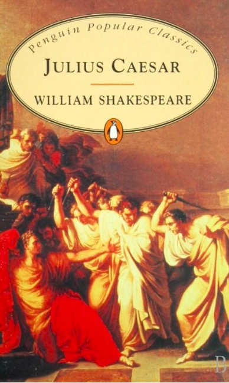
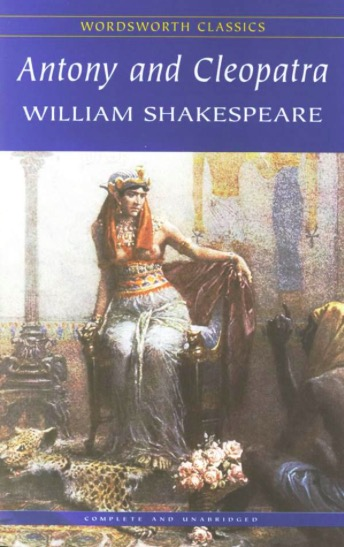

| Julius Caesar  |
Antony and Cleopatra  |
Coriolanus |
|---|
Rome was a recurring theme throughout Shakespeare's career, from the celebrated Julius Caesar, to the more obscure Cymbeline. From the Roman plays listed here, we can learn a bit about how Shakespeare interpret Rome and present it to his audiences.